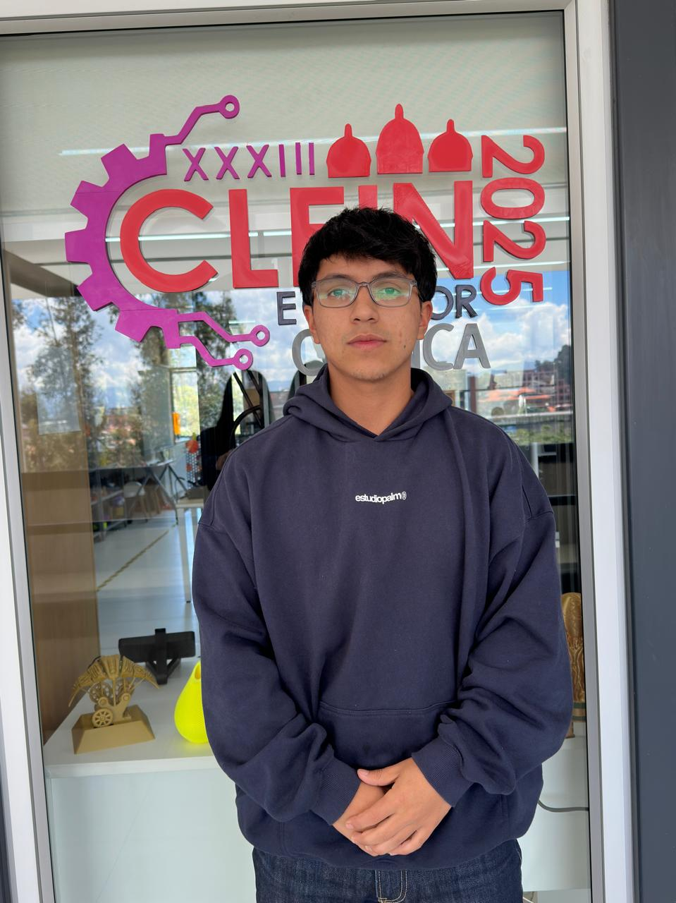
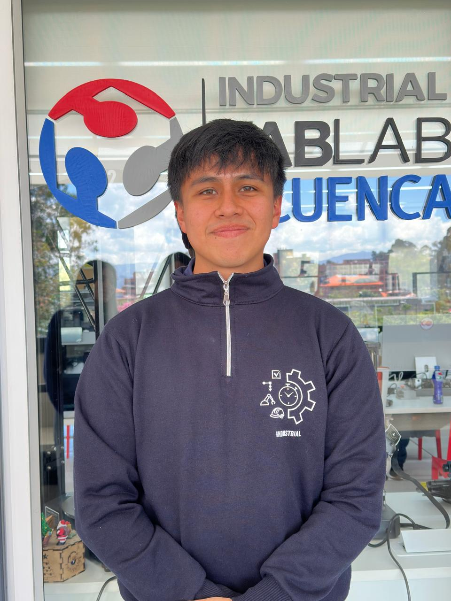
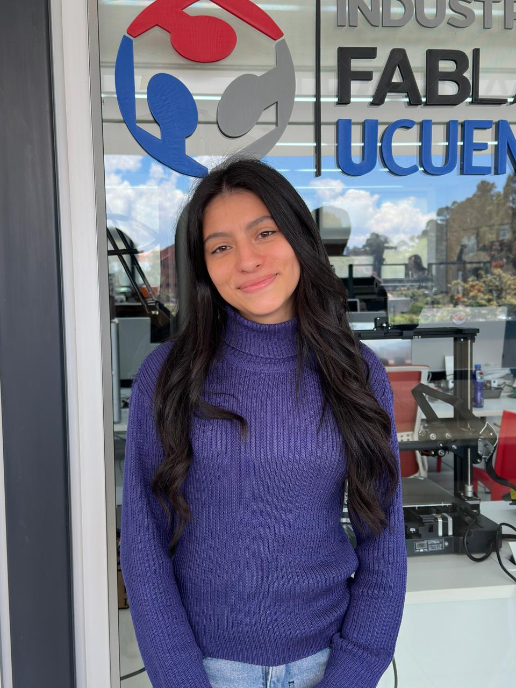
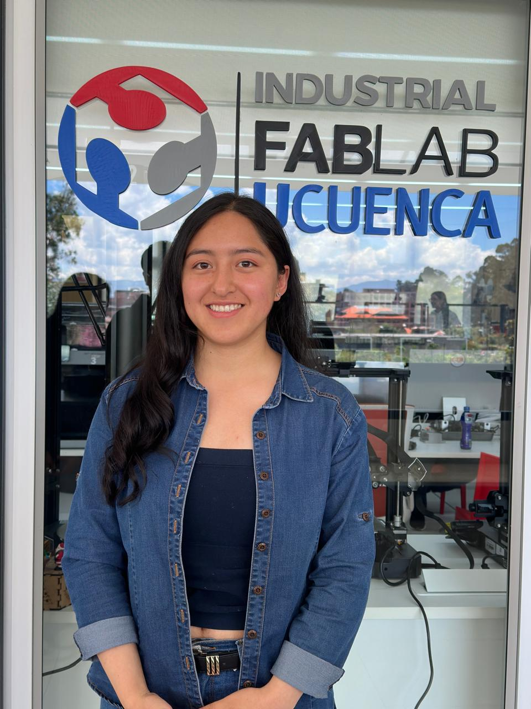

NUESTRO EQUIPO
Conócenos
Somos un grupo de estudiantes que trabaja en conjunto para aprender, crear y desarrollar nuevas ideas durante este proyecto.

01
Andy Campoverde
Estudiante Ingeniería Industrial, UCuenca
Soy un estudiante carismático, creativo y entusiasta, con una actitud positiva ante los nuevos desafíos. Me gusta compartir ideas, trabajar en equipo y participar en actividades que me permitan desarrollar mis habilidades. Me caracterizo por mi creatividad, compañerismo y disposición para aprender cosas nuevas.

02
David Dalgo
Estudiante Ingeniería Industrial, UCuenca
Soy un estudiante de la Universidad de Cuenca, con una mentalidad práctica y orientada a resultados. Me considero una persona organizada, responsable y con gran predisposición para el trabajo en equipo; creo que las mejores ideas nacen cuando cada integrante aporta lo suyo. Tengo grandes expectativas de este proyecto y de mi grupo de trabajo. Cada reto es una oportunidad para aprender, mejorar y crecer juntos.

03
Michelle Idrovo
Estudiante Ingeniería Industrial, UCuenca
Soy una estudiante apasionada, carismática y comprometida con mi aprendizaje. Me interesa la resolución de problemas y disfruto especialmente trabajar con matemáticas. Me caracterizo por ser creativa, organizada y perseverante ante nuevos retos.

04
Denisse Inga
Estudiante Ingeniería Industrial, UCuenca
Soy una estudiante organizada, creativa y apasionada por los detalles. Me gusta mantener el orden y decorar los espacios para darles un toque especial y agradable. Me caracterizo por mi dedicación, responsabilidad y entusiasmo al realizar actividades que me permiten expresar mi creatividad.